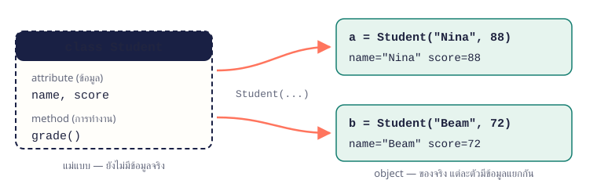

12.1 class คือแม่แบบ object คือของจริง
class อธิบายว่าสิ่งหนึ่งมีข้อมูล (attribute) อะไร และทำอะไรได้ (method) ส่วน object คือของจริงที่สร้างจาก class แต่ละตัวมีข้อมูลของตัวเอง

CHAPTER 12 · ใช้งานจริง
รวมข้อมูลและการทำงานที่เกี่ยวข้องกันไว้ใน class แล้วสร้าง object ได้หลายตัว
สร้าง class กำหนด attribute ใน __init__ เขียน method สร้าง object หลายตัว และจัดการ list ของ object ได้
class อธิบายว่าสิ่งหนึ่งมีข้อมูล (attribute) อะไร และทำอะไรได้ (method) ส่วน object คือของจริงที่สร้างจาก class แต่ละตัวมีข้อมูลของตัวเอง

__init__ ทำงานอัตโนมัติตอนสร้าง object ใช้กำหนดค่าเริ่มต้น self คือ object ตัวที่กำลังสร้าง/ใช้งานอยู่ self.name = name จึงหมายถึงเก็บ name ไว้ใน object นี้
class Student:
def __init__(self, name, score):
self.name = name
self.score = score
a = Student("Nina", 88)
b = Student("Beam", 72)
print(a.name, a.score)
print(b.name, b.score)Nina 88 Beam 72
จำง่าย ๆ ตอนสร้าง Student("Nina", 88) ไม่ต้องส่ง self Python ใส่ให้เอง
method คือฟังก์ชันใน class รับ self เป็นพารามิเตอร์แรกเสมอ จึงอ่านและแก้ข้อมูลของ object ได้
class Student:
def __init__(self, name, score):
self.name = name
self.score = score
def grade(self):
return "ผ่าน" if self.score >= 50 else "ไม่ผ่าน"
def add_bonus(self, points):
self.score += points
s = Student("Tom", 45)
print(s.grade())
s.add_bonus(10)
print(s.score, s.grade())ไม่ผ่าน 55 ผ่าน
ถ้า print(object) ตรง ๆ จะได้ข้อความอ่านยาก เช่น <__main__.Student object at 0x...> เขียน method __str__ คืนข้อความที่ต้องการแสดงแทน
class Product:
def __init__(self, name, price):
self.name = name
self.price = price
def __str__(self):
return f"{self.name} ราคา {self.price:,.2f} บาท"
print(Product("Notebook", 1290))Notebook ราคา 1,290.00 บาท
เก็บ object ไว้ใน list แล้ววนลูปเรียก method หรืออ่าน attribute ได้เหมือนข้อมูลชนิดอื่น
class Student:
def __init__(self, name, score):
self.name = name
self.score = score
students = [Student("Nina", 88), Student("Beam", 72), Student("Mali", 95)]
for s in students:
print(s.name, s.score)
best = max(students, key=lambda s: s.score)
print("สูงสุด:", best.name)Nina 88 Beam 72 Mali 95 สูงสุด: Mali
จำง่าย ๆ key=lambda s: s.score บอก max ให้เทียบด้วยคะแนน
object เก็บยอดเงินของตัวเอง และ method ตรวจกติกาก่อนเปลี่ยนยอด
class BankAccount:
def __init__(self, owner, balance=0):
self.owner = owner
self.balance = balance
def deposit(self, amount):
self.balance += amount
def withdraw(self, amount):
if amount > self.balance:
print(f"{self.owner}: ยอดเงินไม่พอ")
return
self.balance -= amount
def __str__(self):
return f"{self.owner}: {self.balance:,} บาท"
a = BankAccount("Nina", 1000)
b = BankAccount("Beam")
a.deposit(500)
a.withdraw(300)
b.withdraw(100)
print(a)
print(b)Beam: ยอดเงินไม่พอ Nina: 1,200 บาท Beam: 0 บาท
balance=0 เป็นค่าเริ่มต้น บัญชีของ Beam จึงเริ่มที่ 0withdraw ตรวจยอดก่อนหัก ผู้ใช้ class ไม่ต้องเขียนเงื่อนไขนี้ซ้ำเองclass หนึ่งเก็บ object ของอีก class ไว้ใน list
class Item:
def __init__(self, name, price, qty):
self.name = name
self.price = price
self.qty = qty
def total(self):
return self.price * self.qty
class Cart:
def __init__(self):
self.items = []
def add(self, item):
self.items.append(item)
def total(self):
return sum(item.total() for item in self.items)
cart = Cart()
cart.add(Item("ปากกา", 12, 3))
cart.add(Item("สมุด", 45, 2))
for item in cart.items:
print(f"{item.name:<6} {item.total():>5}")
print(f"{'รวม':<6} {cart.total():>5}")ปากกา 36 สมุด 90 รวม 126
Item รู้วิธีคิดราคาของตัวเองCart เก็บ Item หลายตัว และรวมยอดด้วยการเรียก total() ของแต่ละชิ้นเรียงจากง่ายไปยาก ลองเขียนเองให้ได้ output ตรงตัวอย่างก่อน แล้วค่อยเปิดเฉลย
สร้าง class Rectangle เก็บ width และ height มี method area() และ perimeter() แล้วทดสอบกับ 4 × 6
พื้นที่ 24 เส้นรอบรูป 20วิธีคิด
__init__(self, width, height) เก็บเป็น attributeพื้นที่ 24 เส้นรอบรูป 20
method เข้าถึงความกว้างยาวผ่าน self ได้ จึงไม่ต้องส่งค่าเข้าไปซ้ำทุกครั้ง
class Rectangle:
def __init__(self, width, height):
self.width = width
self.height = height
def area(self):
return self.width * self.height
def perimeter(self):
return 2 * (self.width + self.height)
r = Rectangle(4, 6)
print("พื้นที่", r.area(), "เส้นรอบรูป", r.perimeter())สร้าง class Counter เริ่มที่ 0 มี method increment() เพิ่มทีละ 1 และ reset() กลับเป็น 0
3 แล้ว 0วิธีคิด
self.value = 0 ใน __init__self.value3 0
object จำสถานะ (value) ไว้ระหว่างการเรียก method แต่ละครั้ง
class Counter:
def __init__(self):
self.value = 0
def increment(self):
self.value += 1
def reset(self):
self.value = 0
c = Counter()
for _ in range(3):
c.increment()
print(c.value)
c.reset()
print(c.value)สร้าง class Book มี title, author, pages และ __str__ ให้ print(book) ได้ "Python 101" โดย Ada (320 หน้า)
"Python 101" โดย Ada (320 หน้า)วิธีคิด
__str__(self) คืนข้อความ"Python 101" โดย Ada (320 หน้า)
print() เรียก __str__ ให้อัตโนมัติ ใช้ '...' ครอบ f-string เพราะข้างในมี " อยู่แล้ว
class Book:
def __init__(self, title, author, pages):
self.title = title
self.author = author
self.pages = pages
def __str__(self):
return f'"{self.title}" โดย {self.author} ({self.pages} หน้า)'
print(Book("Python 101", "Ada", 320))สร้าง class PiggyBank มีเป้าหมายเงินออม method save(amount) และ progress() คืนเปอร์เซ็นต์ที่ออมได้
ออมแล้ว 1250 / 2000 บาท (62.5%)วิธีคิด
goal และ savedprogress() คืน saved / goal * 100ออมแล้ว 1250 / 2000 บาท (62.5%)
ค่าที่คำนวณได้จากข้อมูลอื่น (progress) ทำเป็น method ดีกว่าเก็บเป็น attribute เพราะไม่ต้องคอยอัปเดตตาม
class PiggyBank:
def __init__(self, goal):
self.goal = goal
self.saved = 0
def save(self, amount):
self.saved += amount
def progress(self):
return self.saved / self.goal * 100
bank = PiggyBank(2000)
for amount in [500, 300, 450]:
bank.save(amount)
print(f"ออมแล้ว {bank.saved} / {bank.goal} บาท ({bank.progress():.1f}%)")สร้าง class Student (name, score) และ Classroom ที่มี method add(), average() และ top() คืนนักเรียนคะแนนสูงสุด
เฉลี่ย 85.00 และ สูงสุด Maliวิธีคิด
average() ใช้ sum ของคะแนนทุกคนtop() ใช้ max(..., key=lambda s: s.score)เฉลี่ย 85.00 สูงสุด Mali
Classroom ไม่ต้องรู้รายละเอียดของ Student มากกว่า name และ score การแบ่งหน้าที่แบบนี้ทำให้ขยายโปรแกรมได้ง่าย
class Student:
def __init__(self, name, score):
self.name = name
self.score = score
class Classroom:
def __init__(self):
self.students = []
def add(self, student):
self.students.append(student)
def average(self):
return sum(s.score for s in self.students) / len(self.students)
def top(self):
return max(self.students, key=lambda s: s.score)
room = Classroom()
for name, score in [("Nina", 88), ("Beam", 72), ("Mali", 95)]:
room.add(Student(name, score))
print(f"เฉลี่ย {room.average():.2f}")
print("สูงสุด", room.top().name)สร้าง class Stock มี name และ qty method sell(n) ที่ raise ValueError ถ้าขายเกินจำนวนที่มี แล้วทดสอบขาย 3 และ 10 จากของ 8 ชิ้น
วิธีคิด
sell ตรวจ n > self.qty แล้ว raiseขาย 3 ชิ้น เหลือ 5 ผิดพลาด: ปากกา เหลือ 5 ชิ้น ขาย 10 ไม่ได้
ตรวจก่อนเปลี่ยนค่าทำให้ object อยู่ในสถานะถูกต้องเสมอ ใช้ความรู้ raise จากบทที่ 9 ร่วมกับ class
class Stock:
def __init__(self, name, qty):
self.name = name
self.qty = qty
def sell(self, n):
if n > self.qty:
raise ValueError(f"{self.name} เหลือ {self.qty} ชิ้น ขาย {n} ไม่ได้")
self.qty -= n
pen = Stock("ปากกา", 8)
for n in [3, 10]:
try:
pen.sell(n)
print(f"ขาย {n} ชิ้น เหลือ {pen.qty}")
except ValueError as e:
print("ผิดพลาด:", e)